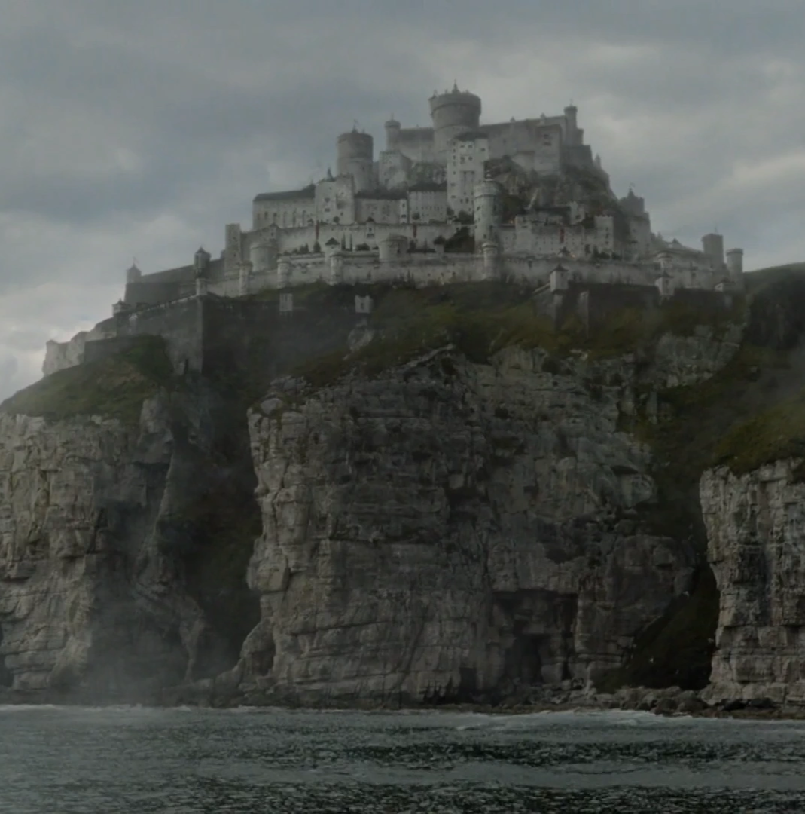
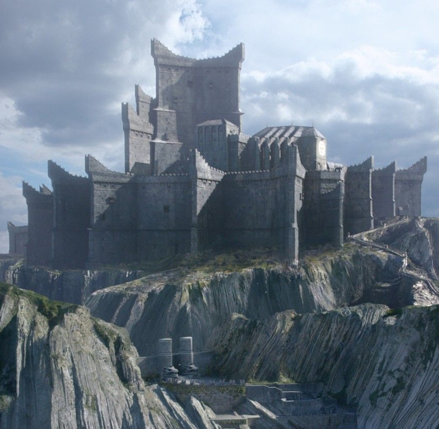
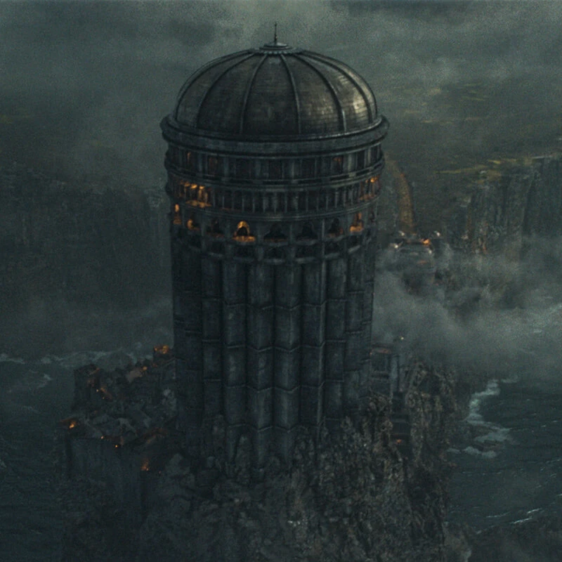
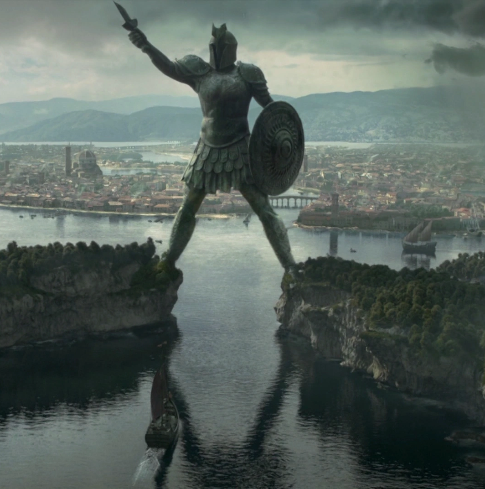

Ubicaciones
Estas son algunas de las ubicaciones donde se desarrollan algunos de los eventos mas importantes de los libros y las series.
Desembarco del Rey

Desembarco del Rey es la ciudad capital de los Siete Reinos, localizada en la costa este de Poniente, en la bahía del Aguasnegras. Es la sede del Trono de Hierro en la Fortaleza Roja y por tanto el asentamiento del Rey de los Siete Reinos. La ciudad principal está rodeada de una muralla y es custodiada por la Guardia de la Ciudad, también conocidos como los Capas Doradas. Está extremadamente poblada, por lo que es una ciudad sucia y llena de edificaciones de madera y paja. Es el principal puerto de los Siete Reinos.
La ciudad tiene aproximadamente forma rectangular y está defendida por altas murallas. Se accede por siete puertas y dentro de ella hay mansiones, tabernas, casuchas de barro y paja, burdeles, cementerios y mercados, como el del pescado. Las principales avenidas tienen árboles y son anchas pero sus ramificaciones, son callejuelas y callejones, estrechos e insalubres.
Los alrededores de Desembarco del Rey solían ser tierra en disputa entre los reyes del Dominio, las Tierras de los Ríos y las Tierras de la Tormenta. Su paisaje consistía esencialmente en bosques y colinas donde vivía un puñado de pescadores asentados en la desembocadura del Aguasnegras. Esta era la situación imperante hasta que, hace 300 años, Aegon el Conquistador desembarcó en ese mismo punto, e inició la construcción de su primera fortaleza, de madera y barro, en la cima de la colina más alta.
Invernalia

Invernalia es la asentamiento ancestral de la Casa Stark. Es considerada la capital del Norte. Está localizada en el centro de la provincia norteña de los Siete Reinos, cerca del Camino Real que lleva a Desembarco del Rey.
Invernalia fue supuestamente construida por Brandon Stark el Constructor hace más de ocho mil años, con la ayuda de los gigantes. Los maestres consideran que fue construida en parcialmente durante diversas épocas, desde que los antiguos Stark no nivelaban el terreno y planificaban la construcción como una sola estructura. Durante la mayor parte de la historia registrada, Invernalia fue la sede de la Casa Stark, como Reyes del Norte y más tarde como guardianes, después de que el rey Torrhen Stark juró lealtad a Aegon el Conquistador y sus dragones.
Según la leyenda popular, Bael el Bardo entró en Invernalia bajo la apariencia de un bardo llamado Sygerrik. Bael supuestamente desapareció con la hija de Lord Brandon Stark después de engañarlo. La hija finalmente reaparecería con un bebé, un futuro Lord Stark, afirmándose que se habían escondido en la Cripta de Invernalia.
Roca Casterly
Roca Casterly es el asentamiento de la Casa Lannister. La fortaleza se localiza en las Tierras del Oeste de Poniente, ante las costas del Mar del Ocaso.
Pese a que el puerto más importante y conocido del Oeste es Lannisport, Roca Casterly cuenta con un pequeño acceso por mar. Esta tierra siempre ha tenido grandes riquezas y la mayor parte de las edificaciones y dependencias están talladas en la roca, en lo que se considera uno de los mayores logros arquitectónicos de los Siete Reinos. La fortaleza está en una zona rica en minas de oro y nunca ha caído ante un enemigo. Se cree popularmente que la fortaleza parece un león que reposa ante la puesta de sol. Las dimensiones de Roca Casterly han sido comparadas con otras joyas de la arquitectura como el Muro o El Faro de Antigua. Tiene casi dos leguas de longitud de oeste a este, y contiene túneles, mazmorras, almacenes, cuarteles, salones, establos, escaleras, patios, balcones y jardines. En las entrañas de la Roca hay habitaciones donde se guardaban antiguos leones enjaulados, y celdas para los peores prisioneros. El castillo contiene también un septo. Bajo el castillo puede escucharse el sonido del mar tan fuerte como un trueno y hay celdas tan ajustadas como armaduras.
La Boca del León, la entrada principal a Roca Casterly, es una enorme caverna natural que alcanza los doscientos pies de altura. Sus pasos son ahora lo suficientemente amplios para veinte jinetes. Su puerto tiene muelles y astilleros.
Rocadragón
Rocadragón es la fortaleza de la Isla de Rocadragón. Fue la fortaleza ancestral de la Casa Targaryen hasta la Guerra del Usurpador, cuando el rey Robert I se la concedió a su hermano Stannis Baratheon.
La fortaleza fue construida al pie del volcán Montedragón con las artes arcanas de la Antigua Valyria. Se dice que los magos de Valyria no tallaban y cincelaban como vulgares albañiles, sino que trabajaban la piedra con fuego y magia igual que haría un alfarero con la arcilla. De hecho, las edificaciones adoptan formas fantásticas de dragones acuclillados o a punto de emprender el vuelo y en lugar de almenas los muros están coronados con miles de gárgolas que representan seres fantásticos: grifos, demonios, mantícoras, minotauros, basiliscos, sabuesos infernales, dragones alados, dragones con cabeza de ave, etc.
En cuanto a la estructura de la fortaleza, tiene tres murallas que delimitan tres patios: una exterior, una intermedia y otra interior, con puertas de hierro negro. En ella se encuentran varias torres, unidas entre sí por puentes de piedra elevados y galerías. El septo está en el lugar donde Aegon el Conquistador se arrodilló para rezar la noche antes de emprender la conquista de los Siete Reinos. Las figuras de los dioses están talladas en la madera de los mástiles de los barcos que trajeron a los Targaryen desde Valyria.
Bastión de Tormentas
Bastión de Tormentas fue la fortaleza de los Reyes de la Tormenta, y actualmente, uno de los asentamientos principales de la Casa Baratheon. Situada en la costa de las Tierras de la Tormenta, posee acceso al mar hacia la Bahía de los Naufragios. Se dice que mientras quede algún Baratheon en pie, Bastión de Tormentas jamás cederá.
Es un castillo con diseño simple: un gran torreón hecho de piedra gris clara que da la espalda al mar. La muralla exterior es redondeada, lisa, fuerte, sin astilleras y porternas, con las piedras tan bien acopladas que no existe endidura alguna. La muralla mide 30 metros de altura, 12 en su punto más delgado y casi 50 de ancho la parte colindante a los acantilados, la última colmada en su interior con arena y guijarros. Es considerada más gruesa que la de Harrenhal.
Dentro de los muros están los patios, establos y cocinas. La única torre es grande y sin ventanas, contiene las habitaciones del señor, los graneros, la sala de banquetes y en la parte superior la celda del maestre y pajarera. Las almenas son tan gigantes que otorgan a la torre el aspecto de un puño alzado con púas. Algunos atribuyen tal resistencia a que un muchacho llamado Brandon, posteriormente conocido como Brandon el Constructor, ayudó a crearla. Otros dicen que fue gracias a los conocimientos de los Hijos del Bosque. El único hecho comprobable es que Bastión de Tormentas resistió y continúa resistiendo las terribles tempestades que se ciernen sobre el reino de tormentas.
Braavos
Braavos, también conocida como Braavos de las Mil Islas, es la más grande y poderosa de las Ciudades Libres. Se asienta en un archipiélago dentro de una laguna, donde el Mar Angosto se encuentra con el Mar de los Escalofríos.
A diferencia de las otras Ciudades Libres, Braavos nunca fue parte del Feudo Franco de Valyria. Fue fundada hacia 500 a.C. por esclavos, prostitutas y ladrones que eran llevados en barcos esclavistas hacia una recién fundada colonia valyria en Sothoryos; los esclavos se rebelaron, tomaron control de los barcos y huyeron al "confín más lejano del mundo".
Quienes escaparon de Valyria y llegaron a la nueva ciudad provenían de muchos lugares distintos; entre los braavosis actuales existen ancestros ándalos, isleños del Verano, ghiscaris, naathi, rhoynar, ibbeneses, sarnoris e incluso deudores y criminales de sangre valyria. Algunos habían sido entrenados en armas para servir como guardias y soldados esclavos; otros eran esclavos de cama, cuyo arte era la entrega de placer. Pero la gran mayoría eran esclavos domésticos, como tutores, niñeras, cocineros, mozos de cuadra y mayordomos, y artesanos expertos, como carpinteros, armeros, albañiles y tejedores. Los nuevos libertos hablaban muchas lenguas por lo que la lengua de su antiguos amos valyrios se convirtió en su lenguaje común. Debido a que habían arriesgado sus vidas en nombre de la libertad, los fundadores de la nueva ciudad prometieron que ningún hombre, mujer o niño en Braavos jamás sería un esclavo o siervo. Esa fue la primera ley de Braavos.